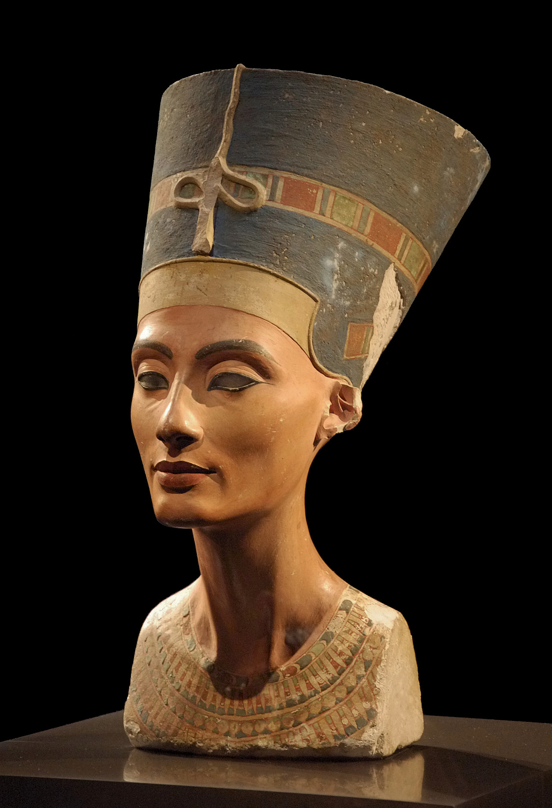

EGYPT · OBJECT JOURNEYS · STOP 01
An audience
with Nefertiti.
One extraordinary portrait.
A journey back to the hands that shaped it.
Begin with the real object. Then travel to an imagined workshop and explore how stone, plaster and color came together.
Circa 1340 BCE · Explore at your own pace · No sound

AKHETATEN / AMARNA · CIRCA 1340 BCE
Inside the sculptor’s workshop.
Choose a discovery. Take a closer look.
AI-created interpretation · Room, tools and object placement are imagined.